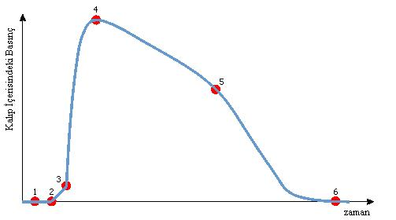

|
4.2. Plastik Malzemelerin Zaman, Basýnç Ve Sýcaklýk Etkilerine Göre Kalýp Ýçerisindeki Hareketi

Þekil 7. Basýnç-Zaman Grafiði
Þekil 8. Amorf Yapýlý ve Yarý Kristal Hammaddeler Ýçin Basýnç- Zaman Grafiði [3]
Þekil 9: Plastiðin Kalýp Ýçerisindeki Hareketleri ve Sonuçlarý [4]
Pozisyon |
Grafikteki noktalarýn açýklamasý |
Prosesteki olaylar |
Eriyiðin enjekte edilmesi |
Malzemenin deðiþim ve kalýplama üzerindeki etkileri |
1 |
Enjeksiyon baþlangýcý |
Hidrolik basýncýn artýþý vidanýn ileri hareketi |
|
|
1 ... 2 |
Eriyiðin göz boþluðuna enjekte edilmesi |
Kalýp göz basýncý = 1 bar |
|
|
2 |
Eriyiðin sensöre ulaþmasý |
Basýncýn artmaya baþlamasý |
|
|
2... 3 |
Kalýp gözünün eriyik ile dolmaya baþlamasý |
Akýþ direncine baðýmlý olarak doldurma basýncý |
Eriyiðin lineer olarak enjekte edilmesi |
* Yavaþ Doldurma
* Ani basýnç yükselmesi yok
* Düþük iç gerilme |
Eriyiðin Kademeli olarak enjekte edilmesi |
* Hýzlý Doldurma
* Malzemenin Bozulmasý
* Ani basýnç yükselmesi
* Yüksek Ýç Gerilim
* Çarpýlma |
3 |
Kalýp gözünün volumetrik olarak dolmasý |
Ýdeal hacim-basýnç sýkýþtýrmasý |
|
* Kontrollü Doldurma
* Aþýrý basýnç olmaz |
3... 4
(... 5) |
Eriyik sýkýþtýrýlmasý |
Plastiðin Hacimsel Çekmesinin Dengelenmesi |
Eriyiðin lineer olarak enjekte edilmesi |
* Yavaþ Sýkýþtýrma
* Ani basýnç yükselmesi yok
* Düzgün Geçiþ
* Düþük Ýç Gerilme
* Vakum Tehlikesi |
Eriyiðin kademeli olarak enjekte edilmesi |
* Hýzlý Sýkýþtýrma
* Ani Basýnç Artýþý, Aþýrý Enjeksiyon Basýncý
* Yüksek Ýç Gerilim
Çarpýlma |
4 |
Maksimum göz basýncý |
Enjeksiyon basýncýnýn sabitliði, malzemenin karakteristik özelliklerinin belirlenmesi |
|
|
4... 6 |
Basýnçta devamlý azalma |
|
Amorf Plastikler |
* Basýnç zamanýný uygun tutma
* Optimum proses |
Basýncýn gözle görülür þekilde azalmasý |
Plastiðin katýlaþmasý |
Yarý Kristal Plastikler |
* Basýnç zamanýný uygun tutma
* Optimum proses |
Malzemenin geriye doðru akýþý (Göz dýþýndaki kýsýmlarýn dolmasý) |
Amorf Plastikler veya Yarý Kristal Plastikler |
* Basýnç Zamanýný Çok Kýsa Tutmak
* Yolluk aðzýndan göze akýþ yok
* Çöküntü Ýzleri |
5 |
Akýþýn bitiþ noktasý (yolluk aðzý) |
Yolluk aðzýnda eriyik katýlaþmasý
(Göz içine akýþ yok) |
|
|
6 |
Çekme prosesinin baþlangýcý |
Önemli kriterlerin denetlenmesi ve ölçü stabilitesinin saðlanmasý |
|
* Dalgalanma normal olarak ölçü deðiþimini gösterir |
Tablo 1. Ergimiþ Plastiðin Kalýba Enjekte Edilme Basamaklarý ve Sonuçlarý [4]
4.3 Ürün Kalitesine Etki Eden Faktörler Ve Etki Dereceleri
Çeþitli Alman makine imalatçýlarý kalýplama parametrelerinin hangisinin kalýplama sonunda en yüksek etkileri olduðunu belirlemek amacýyla bir çok farklý kalýp üzerinde incelemeler yaparak ve aþaðýdaki sonuçlar elde etmiþlerdir.
Tablo 2. Enjeksiyon Deðiþikliklerinin Parça Kalitesine Etkisi [6]
Bu sonuçlara göre iki ana düþünce açýkça kendini belli etmektedir. Ürün kalitesi için her þeyden önce en önemli olan faktörler ince duvarlý parçalarda maksimum göz basýncý ve kalýn duvarlý parçalarda ise uzun enjeksiyon zamaný ve enjeksiyon basýncýdýr. [4]
5. Deðerlendirme
Enjeksiyon kalýp baský parametrelerinin denetimi ve kontrol edilmesi birçok faydalarý neticesinde ürün kalitesini artýrmaktadýr. Ülkemizde yaptýðýmýz araþtýrmalara göre yok denecek kadar az olan bu sistemlerin kullanýmýnýn akademik araþtýrmacýlarýn yakýndan ilgilendiði bir konu haline gelmiþtir. Bu sektörde hassas parçalarýn üretimini yapan kaliteli ürün yapan firmalarýnda maliyetleri dikkate alarak bu sistemleri kullanmalarý gerekecektir. Bu sistemlerin kullanýmý plastik enjeksiyon makinalarý imalatçýlarýnýn da makinelerini bu sistemlerle eþ zamanlý çalýþabilecek þekilde deðiþime uðratma zorunluluðunu getirebilecektir.
Kaynaklar
[1] "Design of A Wireless Sensor For Injection Molding Cavity Pressure Measurement" Zhang, Li ; Theurer, Charles B.; Gao, Robert X., Kazmer, David O., Department of Mechanical and Industrial Engineering University of Massachusetts, Amherst, MA 01003
[2] Chastain, Gary; Understanding the Effect of Pressure in the Cavity
www.moldmakingtechnology.com/articles/1105strat.html, (12.12.2005)
[3] Schnerr, Oliver; Kistler Plastics "Plastics News" Katalog 2/05
[4] www.johnmorris.com.au/html/Kistler/cavity_pressure_fundamental_principle.htm
[5] Hasco Katalog Z 1370 / ... "Pressure measuring system, piezoelectric, Sayfa 2
[6] Dr. Kudlik, Nikolaus, Kistler Plastics "%100 Quality Injection Molding" Katalog 1/04
|